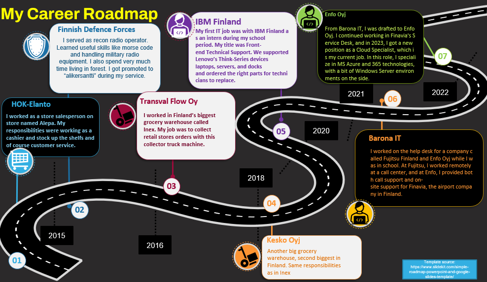

about me
Hello 🌍 !
My name is Robin Ingves, and I work as a cloud specialist at a Finnish IT consulting company. I
specialize in Microsoft technologies, particularly Azure and Microsoft 365, which I use daily.
Occasionally, I also configure on-premises environments.
My primary tasks involve assisting clients with various issues and requests in their cloud
environments. This can range from routine Identity and Access Management (IAM) requests, such as
password changes or Multi-Factor Authentication (MFA) resets in Entra ID, to optimizing or
creating entirely new infrastructures for our customers.
My specialty in Azure lies in networking, particularly in network configuration and
troubleshooting. I find great satisfaction in solving complex network issues and optimizing
network performance for my clients.
I have been part of major migration projects where entire cloud environments were transferred to
new tenants. In these projects, I was responsible for preparing Azure virtual machines for
export to new tenants. Additionally, I work closely with a few dedicated customers as part of a
Cloud Support team, holding weekly meetings to discuss ongoing projects and explore ways to
improve their cloud environments.
I truly enjoy these interactions because they remind me that, despite primarily working from
home, this job is all about customer service. The collaborative aspect brings me immense
satisfaction and highlights the importance of client relationships in my role.
afterwork-life
First of all, I'm a father to a one-year-old boy, so most of my free time is spent playing with
him
and taking care of him. I wouldn't have it any other way. When I do get some family-free time, I
hit
the gym 3-4 times a week. On weekends, I enjoy mountain biking. I also have a history with
combat
sports,
but I've had to pause due to a chest injury. Maybe one day, I'll pick it up again.
I also enjoy gaming on my PC, but I'm not into online games like Counter Strike or League of
Legends. I prefer single-player games and same time I can relax and enjoy good snack when playing without stress from
Sometimes, I do self-learning to understand new cloud computing concepts. For example,
last year, I completed five different Microsoft certifications to support my knowledge.
Our company supported this by raising my salary and paying for all the exams.
zero to hero

When I graduated from high school, I didn’t know what I wanted to study. I started working as
a
cashier in a small grocery store, which was a nice change after all the schoolwork. Although
the
pay
wasn’t much, I managed as I was still living at home.
In early 2015, I went to the military, and I thoroughly enjoyed the entire year I spent
there.
After
my service, I moved out on my own and started working as a warehouse worker. The pay was
better,
and
I had the flexibility to work as much as I wanted. However, after a few years, I realized
that
if I
didn’t figure out what I wanted to do, I might stay in that job for the rest of my life.
In 2019, I applied to Haaga-Helia University’s Information Technology study program and got
accepted. At that point, I had no idea what it would be like to study or work in the IT
field.
My
past experience with computers was mainly gaming on my Windows PC. Initially, it was
challenging
to
keep up with the learning curve as I wasn’t a natural-born genius in the field—I didn’t
program
my
first game nor hack the US military at ten years old.
Despite the challenges, I managed to secure an internship during the COVID-19 lockdown. I
worked
as
frontend support for business devices (laptops, servers, docks, etc.). Working there for a
year
opened the door for me. During this time, I started to gain interest in cloud computing. Our
school
offered four different study lines: Programming, IT Infrastructure, IT Business, and Digital
Services (UX/UI). I chose Infrastructure, which included courses on cloud computing.
As my studies progressed, I also worked as a help-desk specialist at various companies. I
graduated
in the summer of 2022 while working in my current job. Knowing that there were opportunities
in
cloud computing, I expressed my interest to my manager. When a position opened up, I applied
and
was
selected to work as a Cloud Specialist.